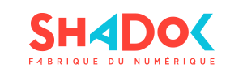

<div class="container"><div class="row"><div class="col-md-12"><div class="divider"></div><div class="row"><div class="col-xs-6 vline-right vcenter"><p></p><strong>Inauguration du Shadok</strong><p>10 et 11 avril 2015</p><p><a href="http://www.shadok.strasbourg.eu/" target="_blank"> Visiter le site du Shadok</a></p></div><div class="col-xs-6 vcenter"></div></div><div class="divider"></div><div class="row"><div class="col-xs-4 vcenter"></div><div class="col-xs-8 vcenter text-center"><h2>vous propose une expérience inédite</h2></div></div><div class="divider"></div><h1 class="title text-center">Prêts à jouer ?</h1><div ng-switch="logged"><div ng-switch-when="true">connecté en tant que {{user.name}}<a ng-click="FB.logout()" href="javascript:" class="logout">Déconnexion</a></div></div><div ng-hide="logged"><a ng-click="pseudoToggle=!pseudoToggle" class="pseudo-toggle">Ou avec un pseudo</a></div><div ng-show="pseudoToggle" class="col-xs-6 col-sm-4 pseudo-form"><div class="input-group"><input type="text" placeholder="Pseudo" ng-model="pseudo" class="form-control"/></div></div><span ng-show="!!user || pseudo &amp;&amp; pseudoToggle"><button type="button" ng-click="connect(user?user:pseudo)" class="btn btn-default">Jouer !</button></span></div></div></div>